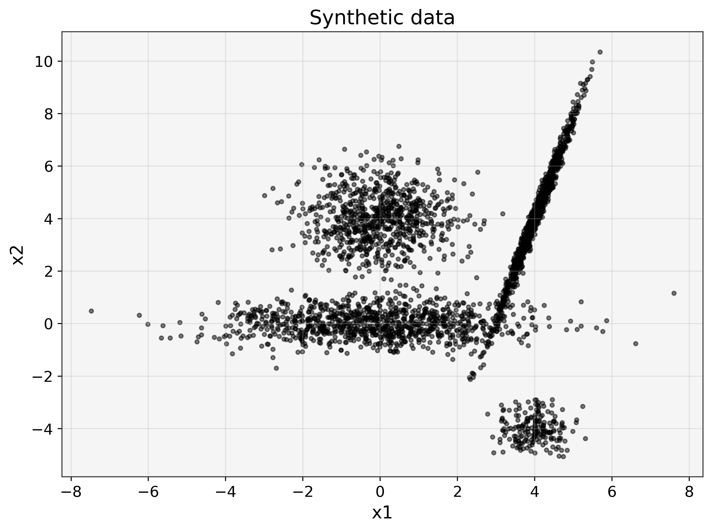
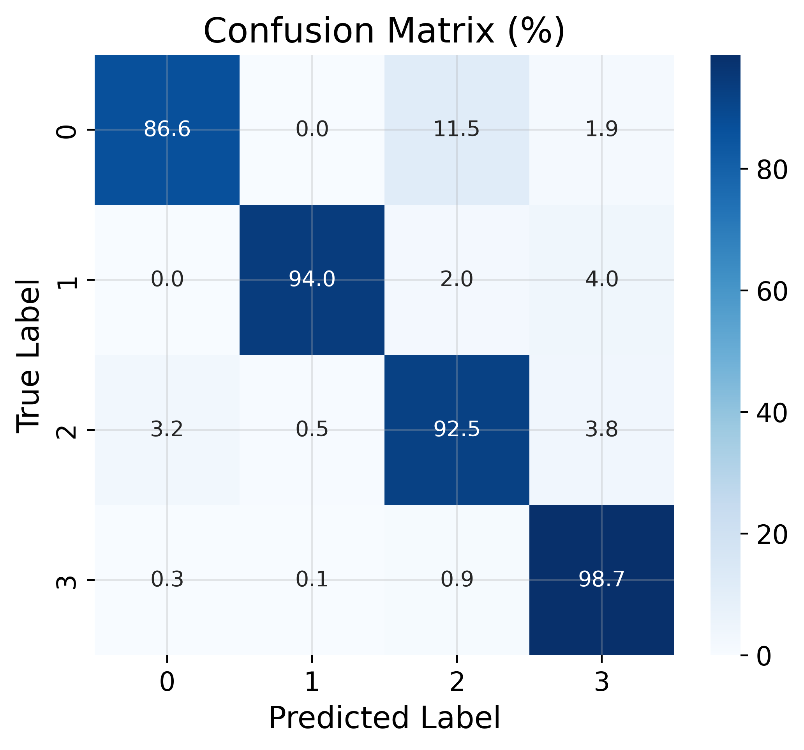
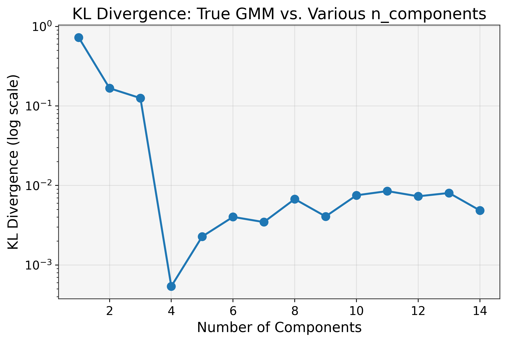

Metrics
[ ]:
import numpy as np
import torch
from tqdm import tqdm
import matplotlib.pyplot as plt
from matplotlib.patches import Ellipse
import seaborn as sns
import pandas as pd
import os
os.chdir('../')
from tgmm import GaussianMixture, GMMInitializer, ClusteringMetrics, dynamic_figsize, plot_gmm
device = 'cuda' if torch.cuda.is_available() else 'cpu'
random_state = 0
np.random.seed(random_state)
torch.manual_seed(random_state)
def dynamic_figsize(rows, cols, base_width=8, base_height=6):
"""
Adjust figure size dynamically based on subplot rows and cols.
Args:
rows (int): Number of rows of subplots
cols (int): Number of columns of subplots
base_width (int): Width per subplot
base_height (int): Height per subplot
Returns:
tuple: Adjusted figure size
"""
return (cols * base_width, rows * base_height)
# Set global style parameters
plt.rcParams.update({
"figure.figsize": (8, 6), # Default figure size
"figure.dpi": 400, # Default figure dpi
"figure.titlesize": 20, # Figure title size
"figure.autolayout": True,
"axes.grid": True, # Add grid by default
"grid.alpha": 0.3, # Grid transparency
"axes.facecolor": "#f5f5f5", # Light background for axes
"axes.edgecolor": "#333333", # Change axes edge color
"axes.labelsize": 14, # Font size for axis labels
"axes.titlesize": 16, # Font size for titles
"xtick.labelsize": 12, # Font size for x-ticks
"ytick.labelsize": 12, # Font size for y-ticks
"legend.fontsize": 12, # Font size for legends
"lines.linewidth": 2, # Default line width
"lines.markersize": 8, # Default marker size
"font.family": "DejaVu Sans", # Font type
"savefig.dpi": 400, # DPI for saved figures
"savefig.format": "pdf", # Default save format
"savefig.bbox": "tight", # Adjust layout when saving
})
[3]:
n_samples = [800, 200, 1000, 1000]
n_features = 2
centers = [np.array([0, 4]),
np.array([4, -4]),
np.array([0, 0]),
np.array([4, 4])]
covs = [
1.0 * np.eye(2), # spherical covariance
0.5 * np.eye(2), # spherical covariance, fewer points
np.array([[2, 0], [0, 0.5]]), # diagonal covariance
np.array([[0.2, 0.5], [0.5, 2]]) # full covariance
]
components = []
labels = []
i = 1
for n, center, cov in zip(n_samples, centers, covs):
samples = np.dot(np.random.randn(n, 2), cov) + center
components.append(samples)
labels.append(i)
i += 1
X = np.vstack(components)
y_true = np.vstack(labels)
n_features = X.shape[1]
n_components = len(n_samples)
# Plot the synthetic data
plt.figure()
plt.scatter(X[:, 0], X[:, 1], s=10, color='black', alpha=0.5)
plt.title('Synthetic data')
plt.xlabel('x1')
plt.ylabel('x2')
plt.show()

[4]:
X_tensor = torch.tensor(X, dtype=torch.float32, device=device)
y_tensor = torch.tensor(y_true, dtype=torch.long, device=device)
print(f"Data shape: {X_tensor.shape}, true number of clusters: {n_components}")
Data shape: torch.Size([3000, 2]), true number of clusters: 4
[5]:
components_range = np.arange(2, 11)
silhouette_vals = torch.zeros(len(components_range), device=device)
davies_vals = torch.zeros(len(components_range), device=device)
calinski_vals = torch.zeros(len(components_range), device=device)
dunn_vals = torch.zeros(len(components_range), device=device)
bic_vals = torch.zeros(len(components_range), device=device)
aic_vals = torch.zeros(len(components_range), device=device)
# Fit a GMM for each n in components_range
for i, n in tqdm(enumerate(components_range), total=len(components_range), desc="Evaluating range"):
gmm = GaussianMixture(
n_features=n_features,
n_components=n,
covariance_type='full',
max_iter=1000,
init_params='kmeans',
device=device
)
# Fit
gmm.fit(X_tensor)
labels_pred = gmm.predict(X_tensor) # shape (N,)
# Compute unsupervised metrics
silhouette_vals[i] = ClusteringMetrics.silhouette_score(X_tensor, labels_pred, n_components=n)
davies_vals[i] = ClusteringMetrics.davies_bouldin_index(X_tensor, labels_pred, n_components=n)
calinski_vals[i] = ClusteringMetrics.calinski_harabasz_score(X_tensor, labels_pred, n_components=n)
dunn_vals[i] = ClusteringMetrics.dunn_index(X_tensor, labels_pred, n_components=n)
bic_vals[i] = ClusteringMetrics.bic_score(gmm.lower_bound_, X_tensor, n, gmm.covariance_type)
aic_vals[i] = ClusteringMetrics.aic_score(gmm.lower_bound_, X_tensor, n, gmm.covariance_type)
fig, axs = plt.subplots(2, 3, figsize=(16, 8))
# 1) Silhouette
axs[0, 0].plot(components_range, silhouette_vals.cpu(), 'o-b')
axs[0, 0].axvline(x=n_components, color='r', linestyle='--', label='True # of Components')
axs[0, 0].set_title('Silhouette Score')
axs[0, 0].set_xlabel('Number of Components')
axs[0, 0].set_ylabel('Score')
axs[0, 0].grid(True)
axs[0, 0].legend()
# 2) Davies-Bouldin
axs[0, 1].plot(components_range, davies_vals.cpu(), 'o-g')
axs[0, 1].axvline(x=n_components, color='r', linestyle='--')
axs[0, 1].set_title('Davies-Bouldin Index')
axs[0, 1].set_xlabel('Number of Components')
axs[0, 1].grid(True)
# 3) Calinski-Harabasz
axs[0, 2].plot(components_range, calinski_vals.cpu(), 'o-y')
axs[0, 2].axvline(x=n_components, color='r', linestyle='--')
axs[0, 2].set_title('Calinski-Harabasz Score')
axs[0, 2].set_xlabel('Number of Components')
axs[0, 2].grid(True)
# 4) Dunn Index
axs[1, 0].plot(components_range, dunn_vals.cpu(), 'o-', color='orange')
axs[1, 0].axvline(x=n_components, color='r', linestyle='--')
axs[1, 0].set_title('Dunn Index')
axs[1, 0].set_xlabel('Number of Components')
axs[1, 0].grid(True)
# 5) BIC
axs[1, 1].plot(components_range, bic_vals.cpu(), 'o-m', label='BIC')
axs[1, 1].axvline(x=n_components, color='r', linestyle='--')
axs[1, 1].set_title('BIC Score')
axs[1, 1].set_xlabel('Number of Components')
axs[1, 1].grid(True)
axs[1, 1].legend()
# 6) AIC
axs[1, 2].plot(components_range, aic_vals.cpu(), 'o-c', label='AIC')
axs[1, 2].axvline(x=n_components, color='r', linestyle='--')
axs[1, 2].set_title('AIC Score')
axs[1, 2].set_xlabel('Number of Components')
axs[1, 2].grid(True)
axs[1, 2].legend()
plt.suptitle("Unsupervised Clustering Metrics for GMM (4D Data)", fontsize=16)
plt.tight_layout()
plt.show()
print("=== Best Number of Components According to Each Metric ===")
print(f"Silhouette Best: {components_range[torch.argmax(silhouette_vals)].item()}")
print(f"Davies-Bouldin Best (lowest): {components_range[torch.argmin(davies_vals)].item()}")
print(f"Calinski-Harabasz Best: {components_range[torch.argmax(calinski_vals)].item()}")
print(f"Dunn Index Best: {components_range[torch.argmax(dunn_vals)].item()}")
print(f"BIC Best (lowest): {components_range[torch.argmin(bic_vals)].item()}")
print(f"AIC Best (lowest): {components_range[torch.argmin(aic_vals)].item()}")
Evaluating range: 100%|██████████| 9/9 [00:00<00:00, 9.26it/s]

=== Best Number of Components According to Each Metric ===
Silhouette Best: 4
Davies-Bouldin Best (lowest): 2
Calinski-Harabasz Best: 6
Dunn Index Best: 2
BIC Best (lowest): 4
AIC Best (lowest): 4
[6]:
# Scikit-learn for comparison
from sklearn.mixture import GaussianMixture as SklearnGMM
from sklearn.decomposition import PCA
from sklearn.metrics import (
silhouette_score,
davies_bouldin_score,
calinski_harabasz_score,
adjusted_rand_score,
normalized_mutual_info_score,
fowlkes_mallows_score,
homogeneity_score,
mutual_info_score,
adjusted_mutual_info_score,
completeness_score,
v_measure_score,
rand_score
)
n_components = true_n_components # 4
gmm = GaussianMixture(
n_features=4,
n_components=n_components,
covariance_type='full',
max_iter=1000,
init_params='kmeans',
device=device
)
gmm.fit(X_tensor)
labels_pred = gmm.predict(X_tensor)
# Metrics with custom ClusteringMetrics
requested_metrics = [
"rand_score",
"adjusted_rand_score",
"mutual_info_score",
"normalized_mutual_info_score",
"adjusted_mutual_info_score",
"fowlkes_mallows_score",
"homogeneity_score",
"completeness_score",
"v_measure_score",
"purity_score",
"silhouette_score",
"davies_bouldin_index",
"calinski_harabasz_score",
"dunn_index",
"bic_score",
"aic_score",
]
scores_torch = ClusteringMetrics.evaluate_clustering(
gmm,
X_tensor,
true_labels=y_tensor,
metrics=requested_metrics
)
print("=== Torch Metrics for n_components=4 ===")
for k, v in scores_torch.items():
# Some items (e.g. classification_report) could be nested or dict, so check type
if isinstance(v, (int, float)):
print(f"{k}: {v:.4f}")
else:
print(f"{k}: {v}")
# Compare with sklearn
X_np = X_tensor.cpu().numpy()
y_np = y_tensor.cpu().numpy()
labels_pred_np = labels_pred.cpu().numpy()
sk_gmm = SklearnGMM(n_components=n_components, covariance_type='full', max_iter=1000, init_params='kmeans')
sk_gmm.fit(X_np)
scores_sklearn = {
"rand_score": rand_score(y_np, labels_pred_np),
"adjusted_rand_score": adjusted_rand_score(y_np, labels_pred_np),
"mutual_info_score": mutual_info_score(y_np, labels_pred_np),
"normalized_mutual_info_score": normalized_mutual_info_score(y_np, labels_pred_np),
"adjusted_mutual_info_score": adjusted_mutual_info_score(y_np, labels_pred_np),
"fowlkes_mallows_score": fowlkes_mallows_score(y_np, labels_pred_np),
"homogeneity_score": homogeneity_score(y_np, labels_pred_np),
"completeness_score": completeness_score(y_np, labels_pred_np),
"v_measure_score": v_measure_score(y_np, labels_pred_np),
"silhouette_score": silhouette_score(X_np, labels_pred_np),
"davies_bouldin_index": davies_bouldin_score(X_np, labels_pred_np),
"calinski_harabasz_score": calinski_harabasz_score(X_np, labels_pred_np),
}
sk_bic = sk_gmm.bic(X_np)
sk_aic = sk_gmm.aic(X_np)
print("\n=== Sklearn Metrics for n_components=4 ===")
for metric, val in scores_sklearn.items():
print(f"{metric}: {val:.4f}")
print(f"BIC: {sk_bic:.4f}")
print(f"AIC: {sk_aic:.4f}")
# Compare BIC/AIC with Torch
torch_bic = ClusteringMetrics.bic_score(gmm.lower_bound_, X_tensor, n_components, gmm.covariance_type)
torch_aic = ClusteringMetrics.aic_score(gmm.lower_bound_, X_tensor, n_components, gmm.covariance_type)
print(f"\nTorch BIC: {torch_bic:.4f} vs Sklearn BIC: {sk_bic:.4f}")
print(f"Torch AIC: {torch_aic:.4f} vs Sklearn AIC: {sk_aic:.4f}")
---------------------------------------------------------------------------
NameError Traceback (most recent call last)
Cell In[6], line 19
3 from sklearn.decomposition import PCA
4 from sklearn.metrics import (
5 silhouette_score,
6 davies_bouldin_score,
(...)
16 rand_score
17 )
---> 19 n_components = true_n_components # 4
20 gmm = GaussianMixture(
21 n_features=4,
22 n_components=n_components,
(...)
26 device=device
27 )
28 gmm.fit(X_tensor)
NameError: name 'true_n_components' is not defined
[ ]:
pca = PCA(n_components=2)
X_pca = pca.fit_transform(X_np) # shape (N, 2)
X_pca_tensor = torch.tensor(X_pca, dtype=torch.float32, device=device)
# Let's define a helper to project means/covariances into PCA space
def transform_means_covariances(means, covariances, pca_sklearn):
"""
Project the GMM means & covariances into the PCA-reduced space.
We'll only keep the top 2 principal components, so each covariance
becomes 2x2 and each mean is 2D.
"""
means_cpu = means.detach().cpu().numpy()
means_pca = pca_sklearn.transform(means_cpu) # NxD -> Nx2
# For each covariance, do W * Cov * W^T, where W are the top 2 PC loadings.
W = pca_sklearn.components_[:2, :] # shape (2, original_dim)
covariances_pca = []
if covariances.dim() == 3: # e.g., 'full' shape = (n_components, d, d)
for i in range(covariances.size(0)):
cov_cpu = covariances[i].detach().cpu().numpy()
cov_2d = W @ cov_cpu @ W.T
covariances_pca.append(cov_2d)
else:
# For diag or spherical, adapt accordingly
# We'll do an approximate approach for demonstration
cov_2d = np.diag(covariances[0].cpu().numpy()[:2])
covariances_pca = [cov_2d for _ in range(means.size(0))]
covariances_pca = np.stack(covariances_pca, axis=0)
return torch.tensor(means_pca, dtype=torch.float32), torch.tensor(covariances_pca, dtype=torch.float32)
means_pca, covariances_pca = transform_means_covariances(gmm.means_, gmm.covariances_, pca)
# Next, let's define a quick function to match predicted labels to the
# ground truth using the Hungarian algorithm (so that colors match).
from scipy.optimize import linear_sum_assignment
def match_labels(y_true_tensor, y_pred_tensor):
y_true_cpu = y_true_tensor.cpu().long()
y_pred_cpu = y_pred_tensor.cpu().long()
max_true = y_true_cpu.max().item() + 1
max_pred = y_pred_cpu.max().item() + 1
# Contingency matrix
cont = np.zeros((max_true, max_pred), dtype=int)
for i in range(y_true_cpu.size(0)):
cont[y_true_cpu[i], y_pred_cpu[i]] += 1
row_ind, col_ind = linear_sum_assignment(-cont) # maximize
mapping = {col_ind[j]: row_ind[j] for j in range(len(row_ind))}
matched_labels = np.array([mapping.get(p, p) for p in y_pred_cpu.numpy()], dtype=int)
return matched_labels
matched_pred = match_labels(y_tensor, labels_pred)
# Let's visualize
fig, ax = plt.subplots(figsize=(8, 6))
correct = (matched_pred == y_tensor.cpu().numpy())
incorrect = ~correct
ax.scatter(X_pca[correct, 0], X_pca[correct, 1], c='lightblue', s=5, label='Correctly predicted')
ax.scatter(X_pca[incorrect, 0], X_pca[incorrect, 1], c='red', s=5, label='Incorrectly predicted')
# Plot the 2D means + ellipses for each component
n_comps = gmm.means_.shape[0]
for i in range(n_comps):
mean_2d = means_pca[i].numpy()
cov_2d = covariances_pca[i].numpy()
ax.scatter(mean_2d[0], mean_2d[1], c='black', marker='x')
# Ellipse for ~95% confidence region: factor ~5.991 for 2D
eigvals, eigvecs = np.linalg.eigh(cov_2d)
order = eigvals.argsort()[::-1]
eigvals, eigvecs = eigvals[order], eigvecs[:, order]
angle = np.degrees(np.arctan2(eigvecs[1, 0], eigvecs[0, 0]))
width, height = 2 * np.sqrt(5.991 * eigvals)
ell = Ellipse(mean_2d, width, height, angle=angle, edgecolor='black', facecolor='none', linestyle='--')
ax.add_patch(ell)
ax.set_title("Clustering Visualization in PCA (4D -> 2D)")
ax.set_xlabel("PCA 1")
ax.set_ylabel("PCA 2")
ax.legend()
plt.show()
---------------------------------------------------------------------------
NameError Traceback (most recent call last)
Cell In[30], line 29
26 covariances_pca = np.stack(covariances_pca, axis=0)
27 return torch.tensor(means_pca, dtype=torch.float32), torch.tensor(covariances_pca, dtype=torch.float32)
---> 29 means_pca, covariances_pca = transform_means_covariances(gmm.means_, gmm.covariances_, pca)
31 # Next, let's define a quick function to match predicted labels to the
32 # ground truth using the Hungarian algorithm (so that colors match).
33 from scipy.optimize import linear_sum_assignment
NameError: name 'pca' is not defined
[ ]:
cm = ClusteringMetrics.confusion_matrix(
torch.tensor(y_true, dtype=torch.long),
torch.tensor(matched_pred, dtype=torch.long)
)
print("\nConfusion Matrix:\n", cm)
report = ClusteringMetrics.classification_report(
torch.tensor(y_true, dtype=torch.long),
torch.tensor(matched_pred, dtype=torch.long)
)
print("\nClassification Report:\n", report)
# Heatmap of confusion matrix
plt.figure(figsize=(6, 5))
sns.heatmap(cm, annot=True, fmt='d', cmap='Blues')
plt.title("Confusion Matrix (Hungarian-Aligned Labels)")
plt.xlabel("Predicted Label")
plt.ylabel("True Label")
plt.show()
# Convert classification report to a DataFrame for display
report_df = pd.DataFrame(report).T
report_df
Confusion Matrix:
tensor([[996, 0, 0, 4],
[ 0, 800, 0, 0],
[ 0, 0, 400, 0],
[ 5, 0, 0, 595]], dtype=torch.int32)
Classification Report:
{0: {'precision': 0.995004995004995, 'recall': 0.996, 'f1-score': 0.9955022488755622, 'support': 1000, 'jaccard': 0.991044776119403, 'roc_auc': 0.99549400806427}, 1: {'precision': 1.0, 'recall': 1.0, 'f1-score': 1.0, 'support': 800, 'jaccard': 1.0, 'roc_auc': 1.0}, 2: {'precision': 1.0, 'recall': 1.0, 'f1-score': 1.0, 'support': 400, 'jaccard': 1.0, 'roc_auc': 1.0}, 3: {'precision': 0.993322203672788, 'recall': 0.9916666666666667, 'f1-score': 0.9924937447873228, 'support': 600, 'jaccard': 0.9850993377483444, 'roc_auc': 0.9971325993537903}}

| precision | recall | f1-score | support | jaccard | roc_auc | |
|---|---|---|---|---|---|---|
| 0 | 0.995005 | 0.996000 | 0.995502 | 1000.0 | 0.991045 | 0.995494 |
| 1 | 1.000000 | 1.000000 | 1.000000 | 800.0 | 1.000000 | 1.000000 |
| 2 | 1.000000 | 1.000000 | 1.000000 | 400.0 | 1.000000 | 1.000000 |
| 3 | 0.993322 | 0.991667 | 0.992494 | 600.0 | 0.985099 | 0.997133 |
[ ]:
RUN_KL_DIVERGENCE = True
if RUN_KL_DIVERGENCE:
print("Computing KL(p||q) for different numbers of components...")
gmm_true = GaussianMixture(
n_features=n_features,
n_components=n_components,
covariance_type='full',
max_iter=1000,
init_params='kmeans',
device=device
)
gmm_true.fit(X_tensor)
test_range = np.arange(5, 15)
kl_vals = torch.zeros(len(test_range), device=device)
for i, n in tqdm(enumerate(test_range), total=len(test_range)):
gmm_test = GaussianMixture(
n_features=n_features,
n_components=n,
covariance_type='full',
max_iter=1000,
init_params='kmeans',
device=device
)
gmm_test.fit(X_tensor)
kl_vals[i] = ClusteringMetrics.kl_divergence_gmm(gmm_true, gmm_test, n_samples=10000)
plt.figure(figsize=(8, 5))
plt.plot(test_range, kl_vals.cpu().numpy(), marker='o')
plt.yscale('log')
plt.title("KL Divergence: True GMM vs. Various n_components")
plt.xlabel("Number of Components")
plt.ylabel("KL Divergence (log scale)")
plt.grid(True)
plt.show()
Computing KL(p||q) for different numbers of components...
100%|██████████| 10/10 [00:00<00:00, 11.48it/s]
